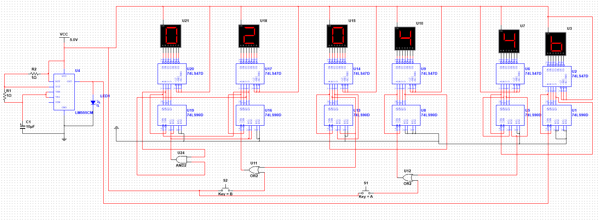
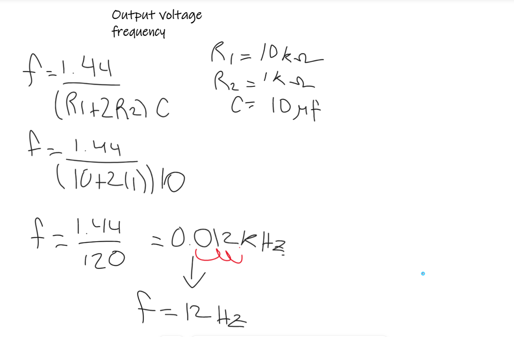

A 24-hour digital clock is an electronic timekeeping device that displays the hours and minutes
continuously in a non-stop format, using digital components such as counters, decoders, and
seven-segment displays. This type of clock is particularly useful in scenarios where time needs to
be tracked throughout the day and night. It finds applications in homes, offices, and various
industries where precise timekeeping is crucial for coordinating activities and processes. Building
a 24-hour digital clock is not only a practical endeavor but also an educational one, as it allows
individuals to apply digital circuitry principles and gain a deeper understanding of electronics
while creating a functional and reliable timekeeping device.
Goals
Precision Timekeeping:
The foremost goal is to create a digital clock that accurately keeps track of time, down to
the seconds and minutes. It should provide reliable time information for various
applications.
Synchronization:
The clock should ensure synchronization among its internal components and functions,
enabling them to work together seamlessly. This synchronization is crucial in
time-sensitive operations and systems.
Schematic

555 Clock
In my project, I employ a 555 timer in the astable mode, which
generates a quadratic
signal. This quadratic signal is a key component in activating the asynchronous
flip-flop
counters in the 74LS90. The frequency of the quadratic signal is a critical factor that
directly depends on the values of the resistors and capacitors in the circuit. By
carefully selecting and configuring these components, I can precisely control the output
frequency, allowing for efficient and reliable operation of the synchronous counters.
This setup plays a crucial role in various applications where accurate timing and
counting are essential, such as in digital electronics and sequential control systems.
We use this formula for calculate the frequency of our quadratic
signal

74LS90 Digital Counter
We use a 74LS90 counter that integrates four JK flip-flops connected in series to
activate the JK input and in parallel in the clock pulse, these JK flip flops of the
74ls90 counter are activated low giving us an ascending count, forming an asynchronous
counter due to the series connection of the JK. Each of the flip flops within the
integrated symbol symbolizes a bit of information, so having 4 bits in this flip-flop
configuration is capable of counting up to 4 bits. I must remember that due to the use
of JK flip flops, it is called a counter, when using type D flip flops they would be
registers, in this case we will use the 4-bit output (denoted as ABCD bits) to establish
an interaction with a 74LS47
The decoder 74ls47 operates with 4-bit inputs, transforming them into seven different
signals.
This operation is essential, since the 7-segment display requires seven input variables
according to its truth table to activate the corresponding LEDs. These resulting signals
are used for precise control of the 7-segment display.
The counter implements a reset function, which is activated through pins 2 and 3. When
both pins receive a logic '1' signal, the counter resets to its initial state '0000',
starting the counting process. right from the start. It is planned to strategically use
this reset function when reaching both the number 6 and the number 24, using an AND
logic gate to manage this condition. This approach allows for efficient and accurate
count management, ensuring proper synchronization with system needs.
The operation of the 7-segment display is governed by a specific truth table, where the
ABCD inputs are interpreted by the 74LS47 decoder to generate seven different outputs.
These outputs, arranged according to a predefined order, numerically represent the
digits on the display. For example, when the inputs are '0000', 4 LEDs arranged in a
circle are activated, indicating the number "0" in binary format.
This process of binary interpretation and decoding is finally translated into the visual
presentation of decimal numbers on the 7-segment display. In this way, the count
generated by the counter can be observed, first in binary format, then decoded by the
decoder and, finally, displayed on the 7-segment display. This comprehensive system
provides a clear and understandable representation of the count in progress.
Conclusion
Ultimately, the comprehensive configuration breaks down as follows: six displays in
total, distributed in two sets for the seconds, two for the minutes and two for the
hours. Each counter is started by low pulses generated by a quadratic signal, or clock
pulse. In the case of the seconds counter, this signal comes from timer 555.
The first counter emits its signal to the second in a configuration that sets it to 0
when it reaches the counting limit (9 in this case). This results in a seconds counter,
which, in turn, is set to reset when it reaches the value 60, thus starting the minute
count. This process is repeated successively until the hours are reached, and a reset
mechanism is implemented when the end of the day is reached, that is, after 23:59:59. In
summary, the coordination between counter, decoder and display is precisely synchronized
to offer a continuous and structured representation of time in the format of hours,
minutes and seconds.